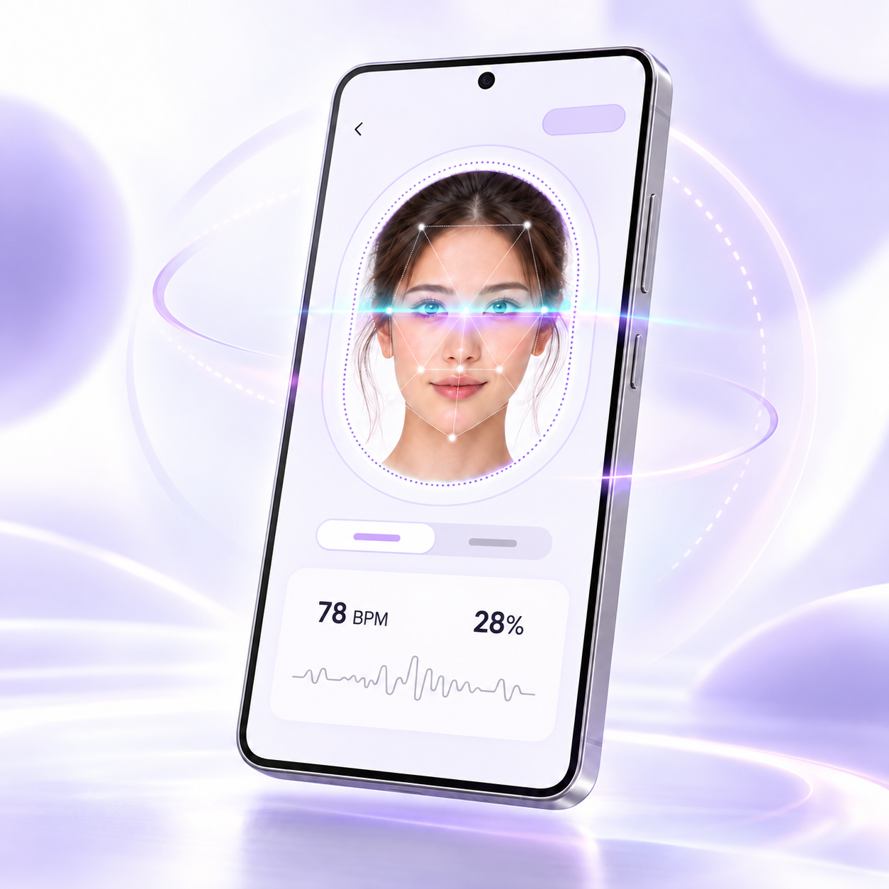

01
Guided face scan
A gentle visual guide helps keep your face in frame while the app captures subtle color changes in the skin.
Learn about rPPG ↗PERSONAL WELLNESS, SIMPLIFIED
Face Scan helps you explore heart rate, HRV, and everyday wellness trends through a quick guided facial scan.
For personal wellness awareness only. Not a medical device or diagnostic tool. Download ↗
HOW IT WORKS
01
A gentle visual guide helps keep your face in frame while the app captures subtle color changes in the skin.
Learn about rPPG ↗02
Remote photoplethysmography studies how light reflected from skin can reveal pulse-related signals.
Browse research ↗03
View your latest reading and notice longer-term patterns in heart rate and heart-rate variability.
Explore heart health ↗GET IN TOUCH